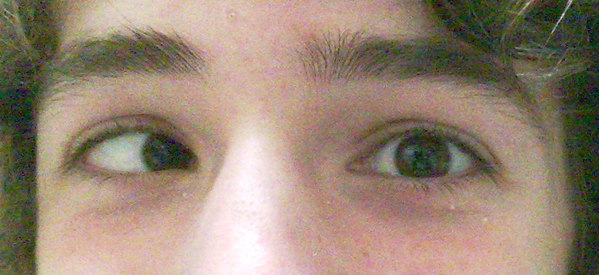
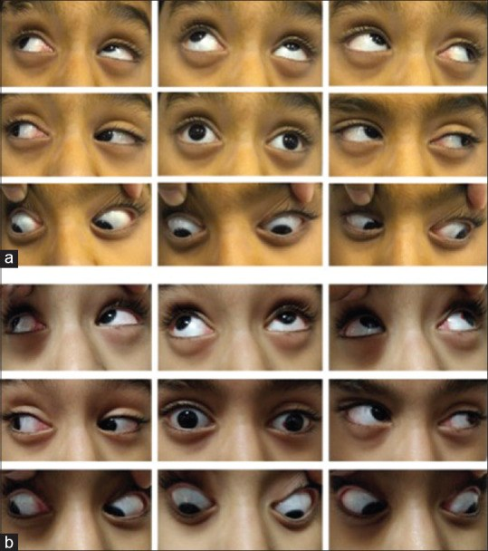
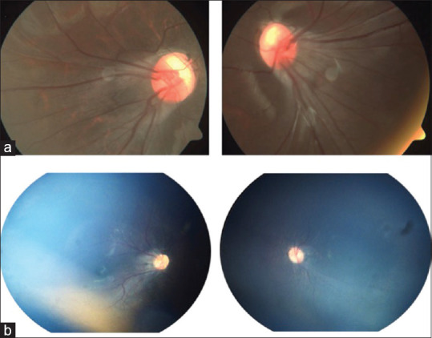

472 — Phẫu thuật lác ở trẻ sinh non/ROP: chỉ định, thời điểm, liều – tái phát & cạm bẫy giả lác / Strabismus surgery in preterm/ROP children: indications, timing, dosing, recurrence and pseudo-strabismus pitfalls
Tags: pattern:lac pattern:lac-trong pattern:lac-ngoai vung:mat vung:co-van-nhan protocol:do-goc-lac protocol:khuc-xa-ly-liet incidentaloma:rop
Mức chắc chắn (certainty): tổng hợp y văn (literature synthesis) — tổng hợp từ 1 ca nguyên văn có ảnh (PMC7350496), 1 thuần tập 949 trẻ (PMC13018795), 1 nghiên cứu so sánh kết cục mổ 480 mắt (PMC6286133), 1 nghiên cứu tái mổ 24.816 trẻ (PMC10394029), 1 loạt 206 bệnh nhân ROP (PMC10442749) và 1 review thời điểm mổ (PMC9023972); chưa gắn một ca nguyên văn duy nhất của nhóm.
Bài này nối tiếp 469 – Lác & nhược thị ở trẻ sinh non/ROP. 469 phủ dịch tễ, khúc xạ, điều trị nhược thị và nguyên tắc chung; bài 472 chỉ đi sâu quyết định phẫu thuật: ai mổ, mổ khi nào, mổ kiểu gì, vì sao tái phát và những cái bẫy khiến mổ sai.
1. Tổng quan — mổ lác để làm gì, và vì sao trẻ sinh non là "ca khó"
- Mục tiêu của phẫu thuật (surgical goal): đưa trục nhãn cầu về chỉnh vị (orthotropia) trong ± 10 PD, tạo điều kiện cho thị giác hai mắt (binocular single vision) và lập thể (stereopsis), cải thiện thẩm mỹ và chất lượng sống. Ở trẻ còn trong thời kỳ nhạy cảm thị giác, mục tiêu cảm giác quan trọng ngang mục tiêu vận động.
- Cơ chế vật lý – giải phẫu (TẠI SAO mổ có tác dụng): lác là mất cân bằng lực giữa các cơ vận nhãn. Lùi cơ (recession) làm yếu cơ (tăng khoảng cách chèn → giảm mô-men xoắn); cắt cơ (resection) làm mạnh cơ (ngắn lại → tăng lực kéo). Kết quả phụ thuộc cung cơ – độ đàn hồi – mô sẹo dính xung quanh, không chỉ số mm lùi/cắt. Vì vậy cùng một liều mổ cho kết cục khác nhau ở mắt có sẹo ROP, đã cryo, đã đặt đai củng mạc (scleral buckle) hoặc đã cắt dịch kính (vitrectomy).
- Vì sao trẻ sinh non/ROP khó hơn trẻ đủ tháng:
- Hoàng điểm lệch (macular ectopia)/kéo hoàng điểm (macular drag): sẹo xơ–mạch kéo hoàng điểm ra thái dương, làm trục thị giác lệch khỏi trục giải phẫu → giả lác ngoài (pseudo-exotropia) dù thật ra lác trong. Đây là cạm bẫy chết người của phẫu thuật lác trong ROP.
- Rối loạn phát triển thần kinh (neurodevelopmental disability — NDD): bại não, bệnh não trắng quanh não thất, xuất huyết não thất — làm kiểm soát vận nhãn kém, tái lác và quá chỉnh (overcorrection) cao hơn.
- Khúc xạ phức tạp: cận thị nặng sau ROP, loạn thị, dị khúc xạ (anisometropia), viễn thị — vừa gây lác vừa làm mờ ảnh sau mổ.
- Nhược thị (amblyopia) và rung giật nhãn cầu (nystagmus) thường đi kèm → kết quả cảm giác kém dù mắt thẳng.
- Mô mềm – củng mạc mỏng, dính: nguy cơ thủng củng mạc khi móc/kéo cơ, đặc biệt mắt đã cryo điều trị ROP (đã có báo cáo thủng củng mạc trong mổ lác ở nhóm này — J Pediatr Ophthalmol Strabismus 2007; chưa rõ số ca trong bài gốc).
- Ngưỡng định lượng nằm lòng:
- Tỷ lệ lác ở trẻ sinh non (Gutenberg Prematurity Study Young, 949 trẻ 4–17 tuổi, Fieß A et al., Br J Ophthalmol 2026, PMC13018795): 6% ở trẻ đủ tháng → 10% (33–36 tuần) → 12% (29–32 tuần) → 23% (≤ 28 tuần) → 20% (ROP ≤ 32 tuần không điều trị) → 68% (ROP ≤ 32 tuần đã điều trị). Rung giật nhãn cầu: 0,8% → 0,4% → 1,8% → 2,6% → 5,0% → 47%.
- Yếu tố nguy cơ lác trong (esotropia): viễn thị OR 4,17; dị khúc xạ OR 3,09; mỗi tuần non thêm OR 1,11. Lác nói chung: tuổi thai sớm OR 1,08/tuần, loạn thị OR 2,48, viễn thị OR 2,09.
- Kết cục mổ lác ngoài ở trẻ sinh non (Jung EH et al., PLoS One 2018, PMC6286133; 48 trẻ sinh non so với 432 đủ tháng, theo dõi trung bình 34,6 ± 13,9 tháng): thành công 60,4% vs 61,8% ở 1 năm (p = 0,691); 43,8% vs 44,2% ở lần khám cuối (p = 0,977); tái phát 33,3% → 54,2% (sinh non) so với 34,5% → 53,2% (đủ tháng). Sinh non tự nó KHÔNG phải yếu tố nguy cơ tái phát (HR 1,139; KTC 95% 0,757–1,714), nhưng NDD làm tăng quá chỉnh (p = 0,004).
- Tái mổ (Lee JY et al., Sci Rep 2023, PMC10394029; 24.816 trẻ ≤ 9 tuổi, Hàn Quốc): tỷ lệ tích lũy tái mổ 843/10.000 (8,4%) với lác ngoài và 1.559/10.000 (15,6%) với lác trong. Yếu tố nguy cơ: tuổi mổ < 3 — OR 4,26 (lác ngoài), 6,57 (lác trong); mổ một mắt — OR 6,49 (lác ngoài), 7,20 (lác trong).
- Thời điểm – bằng chứng: lác trong sơ sinh ≥ 40 PD ở 2–4 tháng hiếm khi tự hết (0/45 và 0/21 trong 2 thuần tập — PEDIG, dẫn trong PMC9023972). ELISS (231 trẻ mổ sớm, tuổi mổ trung bình 20 tháng, so với 301 trẻ mổ muộn 49,1 tháng): lập thể ở 6 tuổi 13,5% vs 3,9%; số mổ/trẻ 1,18 vs 0,99. Mổ sớm (< 24 tháng) có lợi cho lập thể, không khác biệt lớn về góc lác sau mổ.
- Phản biện quan trọng (fidelity + critique): quan niệm "phải chờ góc lác ổn định mới mổ" không được chứng minh trong lác trong sơ sinh: Leuder et al. (n = 30) thấy 11/15 thành công ở cả nhóm góc ổn định (< 5 PD dao động) và nhóm dao động > 10 PD — không cần trì hoãn chờ ổn định. Ngược lại, trì hoãn kéo dài làm mất cơ hội lập thể. Với trẻ sinh non/ROP, lý do trì hoãn đúng là chờ võng mạc ổn định (ROP ngưng hoạt động, không có bong võng mạc tiến triển), không phải "chờ góc ổn định".
2. Mẫu hình + chẩn đoán phân biệt theo cơ chế (gamut)
Cùng một "mắt lác" nhưng cơ chế quyết định có mổ hay không, mổ cơ nào và tiên lượng. Gợi nhớ RIMS:
- R — Refractive (khúc xạ): lác trong điều tiết (accommodative esotropia) do viễn thị chưa chỉnh; tăng điều tiết → tăng quy tụ → lác trong. Chỉnh kính lý liệt đủ có thể làm thẳng mắt hoàn toàn → không mổ. Thể một phần (partial accommodative) còn lác khi nhìn gần dù đeo kính → có thể cần mổ phần còn lại.
- I — Innervational/neurologic (thần kinh): bại não, bệnh não trắng quanh não thất, xuất huyết não thất, não úng thủy, liệt dây III/IV/VI, hội chứng chặn rung giật (nystagmus blockage syndrome) — trẻ quy tụ để "khóa" rung giật, giả lác trong. Mổ khi chưa xử lý nguyên nhân thần kinh dễ thất bại.
- M — Mechanical/restrictive (cơ học/hạn chế): ROP có sẹo (cicatricial ROP), đai củng mạc, dính cơ sau cryo/cắt dịch kính, chấn thương hốc mắt, bệnh tuyến giáp. Nghiệm pháp kéo cưỡng bức (forced duction test) dương tính = có thành phần hạn chế → cần gỡ dính chứ không chỉ lùi/cắt cơ.
- S — Sensory (cảm giác): mắt thị lực kém do ROP nặng, teo thị, đục thể thủy tinh, nhược thị nặng — mắt yếu "trôi" vào trong hoặc ra ngoài. Mổ chỉnh thẩm mỹ là chính; cần nói rõ không hứa hẹn thị giác hai mắt.
Các thể hay gặp ở trẻ sinh non/ROP:
- Lác trong sơ sinh (infantile esotropia): xuất hiện trước 6 tháng, góc lớn (≥ 40 PD), thường hằng định, kèm quá hoạt cơ chéo dưới (inferior oblique overaction — IOOA), lệch dọc không tương xứng (dissociated vertical deviation — DVD), rung giật tiềm ẩn (latent nystagmus).
- Lác trong do điều tiết: thường 2–7 tuổi, góc thay đổi theo khoảng cách, giảm khi đeo kính viễn, có tỷ lệ AC/A cao.
- Lác ngoài (exotropia): hay gặp ở trẻ sinh non lớn hơn, lác ngoài gián đoạn (intermittent exotropia), có thể quá chỉnh sau mổ lác trong (consecutive exotropia).
- Lác cảm giác sau ROP: mắt thị lực kém, hoàng điểm lệch, có thể kèm lác dọc và xoắn (torsion); góc đo bằng prism cover test khó vì thị lực kém — dùng Krimsky/Hirschberg và đo ở cả nhìn xa – gần.
- Giả lác (pseudo-strabismus): nếp da góc mắt (epicanthus), góc kappa dương, hoàng điểm lệch do ROP → trục thị giác lệch, mắt nhìn như lác ngoài dù cover test cho thấy lác trong. Không được mổ dựa trên Hirschberg đơn thuần.
3. Bảng so sánh phân biệt (ma trận đối chiếu)
| Thực thể (entity) | Hình ảnh/lâm sàng điển hình | Chốt vào (rule-in) | Chốt loại (rule-out) | Gợi ý xác nhận |
|---|---|---|---|---|
| Lác trong điều tiết (accommodative esotropia) | Trẻ 2–7 tuổi, lác trong tăng khi nhìn gần, giảm khi đeo kính; viễn thị +2,00 đến +8,00 D | Khúc xạ lý liệt có viễn thị + góc lác giảm/thẳng khi đeo kính đủ | Góc lác không đổi dù chỉnh kính đủ → không phải thể điều tiết thuần | Khúc xạ lý liệt (cyclopentolate 1% hoặc atropine 1%), đo góc trước/sau kính, AC/A |
| Lác trong sơ sinh (infantile esotropia) | Trước 6 tháng, góc ≥ 40 PD, hằng định, IOOA/DVD, rung giật tiềm ẩn | Xuất hiện < 6 tháng + góc lớn hằng định + không có viễn thị đáng kể | Góc nhỏ, gián đoạn, có viễn thị + giảm khi đeo kính → nghĩ điều tiết | Đo góc xa/gần, đánh giá IOOA/DVD, khúc xạ lý liệt, theo dõi 2–4 tháng |
| Lác cảm giác sau ROP (sensory/cicatricial) | Tiền sử laser/cryo/vitrectomy; thị lực chênh; hoàng điểm lệch thái dương; có thể lác dọc/xoắn | ROP đã điều trị + thị lực chênh + hoàng điểm lệch + góc đo được bằng Krimsky | Hai mắt thị lực cân bằng, hoàng điểm đúng vị trí → không phải cảm giác | Soi đáy mắt giãn đồng tử, chụp đáy mắt/OCT, siêu âm B-scan nếu media đục, đo góc nhiều lần |
| Giả lác ngoài do hoàng điểm lệch (macular drag pseudo-exotropia) | Nhìn như lác ngoài hai mắt; Hirschberg lệch mũi; cover test lại là lác trong | Hirschberg "ngoài" + cover test "trong" + tiền sử ROP + hoàng điểm kéo thái dương | Cover test xác nhận lác ngoài thật + không có kéo hoàng điểm | Cover test là chốt; chụp đáy mắt; không mổ theo Hirschberg |
| Lác ngoài gián đoạn (intermittent exotropia) | Lác ngoài khi mệt/nhìn xa, có lúc thẳng; kiểm soát tốt khi nhìn gần | Góc ngoài chỉ xuất hiện khi phá dung hợp, còn lúc khác thẳng | Lác ngoài hằng định + không bao giờ thẳng → lác ngoài thường trực | Đo góc xa/gần, test che mắt 30–60 phút, kiểm soát (control) |
| Hội chứng chặn rung giật (nystagmus blockage) | Lác trong "chủ động" để giảm rung giật; đầu quay; thị lực tốt hơn khi lác | Lác trong + rung giật giảm khi quy tụ + đầu quay | Không có rung giật, lác trong hằng định → lác trong thông thường | Quan sát rung giật khi che mắt, đo thị lực ở các tư thế, ghi video |

Ảnh lâm sàng lác trong mắt phải (esotropia of the right eye) — minh họa hướng lệch trục nhãn cầu, không phải ca ROP. Ảnh: Kakawere, Wikimedia Commons, CC BY 4.0 (giữ nguyên bản).Ba dấu hiệu phải đo trước khi quyết định mổ
- Góc lác (angle of deviation) tính bằng PD (prism diopter), đo ở cả nhìn xa 5–6 m và nhìn gần 33–40 cm, có/không kính, có/không che mắt. Ghi góc nguyên phát và góc ở các hướng nhìn (9 hướng) để phát hiện không đồng nhất (incomitance).
- Kiểm soát (control) và tần suất lác ở lác gián đoạn: dùng thang NCS (Newcastle Control Score) 0–7 hoặc LACTOSE 0–6 — điểm cao = lác nhiều = cân nhắc mổ sớm hơn.
- Lập thể (stereoacuity): Titmus/Randot/TNO; mất lập thể là lý do mổ sớm, còn lập thể tốt cho phép theo dõi ở lác gián đoạn nhẹ.
4. Protocol chụp/đo + thuật toán phẫu thuật
4.1. Đánh giá trước mổ (bắt buộc đủ bộ)
- Khúc xạ lý liệt (cycloplegic refraction): cyclopentolate 1% (nhỏ 2–3 lần, cách 5 phút) hoặc atropine 1% (3 ngày) ở trẻ nhỏ/trẻ có rung giật; phải chỉnh kính đủ và cho đeo 6–8 tuần trước khi kết luận không đáp ứng. Ở trẻ sinh non, cận thị cao sau ROP phải chỉnh đủ — không cắt bớt độ.
- Thị lực: tuổi phù hợp (Teller/Snellen/Lea/ETDRS); thị lực từng mắt (che mắt) để phát hiện nhược thị — mổ lác khi nhược thị chưa điều trị thường tái lác và kết quả cảm giác kém.
- Đo vận nhãn: 9 hướng nhìn, ductions/versions, tìm IOOA (quá hoạt cơ chéo dưới), DVD, hạn chế vận nhãn.
- Forced duction test (dưới gây mê) khi nghi hạn chế cơ học: ROP sẹo, đai củng mạc, dính sau cryo. Dương tính → cần gỡ dính/tenolysis hoặc cắt dải xơ, không chỉ lùi cơ.
- Đáy mắt giãn đồng tử: loại trừ bong võng mạc, ROP hoạt động, kéo hoàng điểm, teo thị; OCT nếu trẻ hợp tác; siêu âm B-scan nếu đục media.
- Đánh giá toàn thân: tiền sử sinh non, cân nặng lúc sinh, ROP, bại não, động kinh, bệnh phổi mạn (BPD); nguy cơ ngưng thở sau mê ở trẻ sinh non — phối hợp gây mê nhi, theo dõi SpO₂/apnea sau mổ theo phác đồ địa phương.
- Chụp hình ảnh: không có chỉ định chẩn đoán lác bằng CT/MRI thường quy; MRI/CT sọ chỉ khi nghi bệnh thần kinh – hốc mắt (liệt dây, proptosis, chấn thương). Với ROP, ảnh đáy mắt/OCT quan trọng hơn CT.
4.2. Chọn kiểu mổ (nguyên tắc, không có công thức chung)
| Tình huống | Lựa chọn thường dùng | Điều cần lưu ý |
|---|---|---|
| Lác trong 15–40 PD, không hạn chế | Lùi hai cơ trực trong (bilateral medial rectus recession) hoặc lùi–cắt một mắt (recess–resect) | Ưu tiên hai mắt ở trẻ nhỏ để tránh tái mổ (mổ một mắt OR 6,49–7,20) |
| Lác trong > 40 PD | Lùi hai trực trong + lùi/cắt trực ngoài hoặc mổ 3–4 cơ | Nguy cơ quá chỉnh và hạn chế vận nhãn; cân nhắc mổ hai thì |
| Lác ngoài 15–40 PD | Lùi hai trực ngoài hoặc lùi–cắt một mắt | Ở trẻ NDD, quá chỉnh hay gặp — giảm liều so với trẻ thường |
| Có IOOA/DVD | Làm yếu cơ chéo dưới (IO myectomy/recession) cùng thì hoặc thì sau | Không bỏ sót lệch dọc — sẽ lộ ra sau khi chỉnh ngang |
| Hạn chế cơ học (ROP sẹo, đai) | Gỡ dính + lùi cơ; đôi khi cắt dải xơ | Forced duction quyết định; nguy cơ thủng củng mạc ở mắt mỏng |
| Lác nhỏ < 10 PD, thẩm mỹ chấp nhận | Theo dõi/kính lăng hoặc botulinum toxin A (chọn lọc) | Không mổ chỉ vì "thấy lệch" nếu không ảnh hưởng chức năng/thẩm mỹ |
- Liều cụ thể (mm) theo bảng của từng phẫu thuật viên dựa trên góc lác, chiều dài nhãn cầu, độ đàn hồi cơ; chưa có công thức được kiểm chứng riêng cho trẻ sinh non — không suy diễn liều người lớn sang trẻ nhỏ.
- Botulinum toxin A vào cơ trực trong/ngoài là lựa chọn ở lác nhỏ, lác sau liệt dây VI, hoặc trẻ quá nhỏ; hiệu quả tạm thời, có thể lặp; không thay thế mổ khi góc lớn/hạn chế cơ học.
4.3. Thời điểm mổ — thuật toán
flowchart TD
A[Trẻ sinh non/ROP có lác] --> B[Khúc xạ lý liệt + chỉnh kính đủ 6-8 tuần]
B --> C{Còn lác sau kính?}
C -->|Không| D[Theo dõi, không mổ]
C -->|Có| E[Điều trị nhược thị tối ưu]
E --> F{Võng mạc ổn định? <br/>ROP ngưng hoạt động, không bong}
F -->|Không| G[Trì hoãn, phối hợp võng mạc nhi]
F -->|Có| H{Góc lác và loại lác}
H -->|Lác trong sơ sinh ≥ 40 PD dưới 24 tháng| I[Mổ sớm để tối ưu lập thể]
H -->|Lác điều tiết còn lại| J[Mổ phần còn lại sau kính]
H -->|Lác cảm giác/ROP| K[Mổ chỉnh thẩm mỹ + gỡ dính nếu cần]
H -->|Lác ngoài gián đoạn| L[Theo dõi nếu kiểm soát tốt; mổ nếu mất kiểm soát]
I --> M[Đo lại 1 tuần, 6-8 tuần, 3 tháng]
J --> M
K --> M
L --> M
M --> N{Trong ± 10 PD?}
N -->|Có| O[Theo dõi 6-12 tháng + lập thể]
N -->|Không| P[Cân nhắc chỉnh kính/lăng kính, mổ lại sau >= 3-6 tháng]
- Ngưỡng thực hành: mổ khi góc lác hằng định ≥ 10–15 PD gây mất lập thể/rối loạn chức năng hoặc ảnh hưởng thẩm mỹ rõ; với lác trong sơ sinh ≥ 40 PD, không chờ tự hết.
- Mốc vàng cho lập thể: chỉnh vị trước 12–24 tháng cho kết quả lập thể tốt nhất; mổ sau 39 tháng hầu như không đạt lập thể trong loạt của Çerman (dẫn trong PMC9023972) — nhưng vẫn cải thiện thẩm mỹ/chất lượng sống ở mọi tuổi.
- Theo dõi sau mổ: 1 tuần (nhiễm trùng, hạn chế vận nhãn), 6–8 tuần (góc lác, quá chỉnh), 3 tháng, sau đó 6–12 tháng; đo lại khúc xạ vì cận thị ROP có thể tiến triển.
4.4. Hệ phân độ/điểm dùng trong thực hành (không có RADS cho lác)
| Thang | Thành phần | Ngưỡng/ý nghĩa |
|---|---|---|
| Góc lác (PD) | Prism alternate cover test xa/gần | < 10 PD**: nhỏ; **10–20 PD**: vừa; **20–40 PD**: lớn; **> 40 PD: rất lớn |
| Kiểm soát lác gián đoạn | NCS 0–7 hoặc LACTOSE 0–6 | Điểm cao = lác thường xuyên; NCS ≥ 3 thường là ngưỡng cân nhắc can thiệp |
| Lập thể | Titmus/Randot/TNO (arcsec) | Mất lập thể = ưu tiên mổ sớm; lập thể tốt = theo dõi |
5. Biến thể bình thường và cạm bẫy
- Cạm bẫy số 1 — giả lác ngoài do hoàng điểm lệch: trẻ ROP có Hirschberg lệch mũi (trông như lác ngoài) nhưng cover test cho thấy lác trong. Nếu mổ theo "lác ngoài" sẽ làm lác trong nặng thêm. Ca nguyên văn: bé trai 8 tuổi, 35 PD lác trong, −7,50 D, Hirschberg "ngoài", cover test "trong"; xử trí làm yếu hai cơ chéo dưới vì V-pattern, cố ý không chỉnh lác trong để tránh làm giả lác ngoài rõ hơn (Sethi A et al., Indian J Ophthalmol 2020, PMC7350496). Ca 2: bé 6 tuổi, 15° giả lác ngoài, −6,50 D, điều trị bảo tồn.
- Cạm bẫy số 2 — mổ lác trong điều tiết khi chưa chỉnh kính đủ: nếu chưa khúc xạ lý liệt, bỏ sót viễn thị +2,00 đến +8,00 D → mổ oan, rồi vẫn lác. Luôn cho đeo kính đủ 6–8 tuần trước khi kết luận.
- Cạm bẫy số 3 — "chờ góc ổn định" quá lâu: bằng chứng không chứng minh phải chờ (Leuder n = 30); chờ lâu mất lập thể. Trì hoãn chỉ hợp lý khi võng mạc chưa ổn định hoặc nhược thị chưa điều trị.
- Cạm bẫy số 4 — bỏ sót lệch dọc/DVD/IOOA: chỉnh ngang xong mới lộ lệch dọc; cần đo 9 hướng và xử lý cơ chéo cùng lúc nếu có chỉ định.
- Cạm bẫy số 5 — mổ một mắt ở trẻ nhỏ: OR tái mổ 6,49–7,20 so với mổ hai mắt; nếu góc phù hợp, ưu tiên hai mắt.
- Cạm bẫy số 6 — quá chỉnh ở trẻ NDD: NDD là yếu tố nguy cơ quá chỉnh (p = 0,004); cân nhắc giảm liều và theo dõi sát.
- Cạm bẫy số 7 — thủng củng mạc: mắt ROP đã cryo có củng mạc mỏng/dính; móc cơ nhẹ tay, dùng móc không sắc, kiểm tra đáy mắt nếu nghi.
- Cạm bẫy số 8 — coi lác cảm giác là "thất bại kỹ thuật": ở mắt thị lực kém, tái lác là quy luật, cần tư vấn trước mổ rằng mục tiêu là thẩm mỹ, không phải thị giác hai mắt.
- Cạm bẫy số 9 — bỏ qua nguy cơ gây mê: trẻ sinh non/BPD có nguy cơ ngưng thở sau mê; không mổ ngoại trú ở trẻ nguy cơ cao.

(a) Trước mổ: giả lác ngoài hai mắt, quá hoạt cơ chéo dưới, V-pattern. (b) Sau mổ: V-pattern và động tác nâng khi nhìn vào giảm; lác trong không chỉnh để tránh làm giả lác ngoài nặng thêm. Nguồn: Sethi A et al., Indian J Ophthalmol 2020 (PMC7350496), Fig. 1, CC BY-NC-SA 4.0 (giữ nguyên bản).
*(a) Ca 1 và (b) Ca 2: kéo hoàng điểm thái dương (temporal macular drag), ROP đã thoái triển. Đĩa thị–hoàng điểm lệch làm trục thị giác lệch khỏi trục giải phẫu → Hirschberg "ngoài" dù cover test "trong". Nguồn: Sethi A et al., PMC7350496, Fig. 2, CC BY-NC-SA 4.0 (giữ nguyên bản).*6. Tự lượng giá — Blind Quiz
Ca 1 — Bé trai 8 tuổi, sinh non, đã laser ROP. Nhìn như lác ngoài hai mắt 3 năm. Thị lực 20/40 mỗi mắt với −7,50 D. Hirschberg lệch mũi, nhưng cover test cho thấy mắt đi từ ngoài vào trong.
- Gợi ý lâm sàng: ROP đã điều trị, cận thị cao, không đau, không song thị (trẻ nhỏ thường không kêu).
- Câu hỏi: Đây là lác ngoài hay lác trong? Vì sao Hirschberg và cover test "nói khác nhau"? Nên mổ cơ nào?
Bấm để hiện đáp án (findings + chẩn đoán)
- Dấu hiệu: Hirschberg lệch mũi (giả lác ngoài), nhưng cover test cho chuyển động vào–ra → lác trong thật 35 PD, kèm quá hoạt cơ chéo dưới hai bên và V-pattern. Đáy mắt: kéo hoàng điểm thái dương hai mắt.
- Chẩn đoán: giả lác ngoài (pseudo-exotropia) do hoàng điểm lệch + lác trong thật ở trẻ ROP — không phải lác ngoài.
- Xử trí trong ca nguồn: làm yếu hai cơ chéo dưới để chỉnh V-pattern; cố ý không chỉnh lác trong để tránh làm giả lác ngoài rõ hơn. Sau mổ V-pattern và động tác nâng giảm.
- Bài học: cover test là chốt, không mổ theo Hirschberg/ảnh.
- Nguồn ảnh: Sethi A et al., Indian J Ophthalmol 2020 (PMC7350496), Fig. 1, CC BY-NC-SA 4.0.
Ca 2 — Bé gái 5 tuổi, sinh 27 tuần, ROP đã laser, lác ngoài 30 PD. Mổ lùi hai trực ngoài. Ba tháng sau còn lác ngoài 12 PD, mẹ hỏi "có phải mổ lại không".
- Gợi ý lâm sàng: không có hạn chế vận nhãn, không có NDD, đang đeo kính đúng.
- Câu hỏi: Tỷ lệ thành công và tái phát sau mổ lác ngoài ở trẻ sinh non là bao nhiêu? Có nên mổ lại ngay không?
Bấm để hiện đáp án (findings + chẩn đoán)
- Số liệu: ở 48 trẻ sinh non mổ lác ngoài, thành công 60,4% ở 1 năm và 43,8% ở lần khám cuối; tái phát 33,3% → 54,2% — tương đương trẻ đủ tháng (61,8%/44,2%; 34,5%→53,2%). Sinh non không phải yếu tố nguy cơ tái phát (HR 1,139; KTC 95% 0,757–1,714).
- Chẩn đoán: tái lác ngoài sau mổ — diễn tiến thường gặp, không phải biến chứng bất thường.
- Xử trí: theo dõi thêm 3–6 tháng, đo góc xa/gần, kiểm soát, lập thể; chỉ mổ lại khi góc ổn định ≥ 15 PD hoặc ảnh hưởng thẩm mỹ/chức năng. Nếu NDD, cảnh báo nguy cơ quá chỉnh.
- Bài học: tư vấn trước mổ rằng tái phát ~1/2 ở 3–4 năm là kịch bản có thể xảy ra, không phải "mổ hỏng".
- Nguồn số: Jung EH et al., PLoS One 2018 (PMC6286133), CC BY 4.0.
Ca 3 — Bé gái 4 tuổi, nhìn gần hay lác trong, nhìn xa thẳng. Chưa đo khúc xạ lý liệt. Mẹ xin mổ vì "cô giáo nói mắt lác".
- Gợi ý lâm sàng: lác thay đổi theo khoảng cách; không có tiền sử ROP; chưa đeo kính.
- Câu hỏi: Bước đầu tiên là gì? Khi nào mới cân nhắc mổ?
Bấm để hiện đáp án (findings + chẩn đoán)
- Dấu hiệu: lác trong tăng khi nhìn gần, giảm/straight khi nhìn xa — gợi ý thành phần điều tiết.
- Chẩn đoán: nghi lác trong điều tiết (accommodative esotropia) do viễn thị chưa chỉnh; cần khúc xạ lý liệt (cyclopentolate 1% hoặc atropine 1%).
- Xử trí: chỉnh kính viễn đủ và cho đeo 6–8 tuần; nếu thẳng hoàn toàn → không mổ. Nếu còn lác khi nhìn gần/gần với kính → lác điều tiết một phần, có thể mổ phần còn lại sau khi đã chỉnh kính và điều trị nhược thị.
- Bài học: không mổ lác trước khi đo khúc xạ lý liệt — đây là lỗi hay gặp nhất ở trẻ mầm non.
- Nguồn ảnh: Kakawere, Wikimedia Commons, CC BY 4.0 (ảnh minh họa, không phải ca cụ thể).
Bài liên quan chéo
- 400 – Tổng quan Mắt & thị giác
- 469 – Lác & nhược thị ở trẻ sinh non/ROP
- 456 – Bệnh võng mạc trẻ sinh non (ROP): phân vùng – giai đoạn – sàng lọc
- 458 – Di chứng & theo dõi dài hạn sau ROP
- 471 – Rung giật nhãn cầu ở trẻ nhũ nhi & trẻ sinh non
- 483 – Sàng lọc thị lực trẻ mầm non
Ảnh
- Tên file
472_<mô tả>_<modality>_<nguồn>-<Fig>-<license>.jpg; nguồn + giấy phép từng ảnh trongimages/CREDITS.md. - Ảnh PMC7350496 là CC BY-NC-SA 4.0 — dùng nguyên bản, không crop/kéo giãn, ghi công và chia sẻ lại theo cùng giấy phép.
- Ảnh Wikimedia Commons là CC BY 4.0, ghi công tác giả.
- Không tải ảnh từ AuntMinnie/paywall; nguồn đóng chỉ dẫn link ở
sources.md.
Không dùng để chẩn đoán độc lập khi chưa có người hướng dẫn.